Three Clusters and Perplexity
January 27, 2018
Source:vignettes/articles/three-clusters.Rmd
three-clusters.RmdThis article retains its original experiments and examples. For current package usage, see the usage guide.
How to Use t-SNE Effectively runs through a lot of considerations in interpreting a t-SNE plot. Section 3 is particularly interesting to me because it presents a deceptively simple synthetic dataset of three homogeneous 2D Gaussian clusters of equal size (50 points each), arranged linearly, with the difference between cluster 2 and 3 being 5 times larger away than that of cluster 1 and 2.
Despite this simplicity, results at larger perplexities (50 and 100), which reproducing the relative distances between clusters, show some distortions of the clusters themselves. When the size of the clusters are increased from 50 to 200, none of the trial perplexities can reproduce the global structure of the data.
This dataset seems perfect for messing about with in
smallvis. What follows attempts to replicate the results of
the distill page and then tries some other methods.
Datasets
The snedata package can generate all the data used on the distill page. For the three clusters:
threec_50 <- snedata::three_clusters_data(n = 50, dim = 2)
threec_200 <- snedata::three_clusters_data(n = 200, dim = 2)Settings
Settings are based on those used on the distill page. The only difference is that initialization will use the option which is entirely deterministic and seems to work fine. Some results will end up looking a bit better than the distill results because the scaled PCA result will be reasonably close to the PCA result, which perfectly reproduce the distances in the dataset. This mainly affects the low perplexity results, which focus on local distances over global ones, so starting from a PCA-like initialization is very helpful here.
Here’s an example:
threec_200_tsne_p2 <- smallvis(
threec_200,
scale = FALSE,
perplexity = 2,
Y_init = "spca",
method = "tsne",
eta = 10,
max_iter = 5000,
exaggeration_factor = 4,
stop_lying_iter = 150
)Results
50 points per cluster
 |
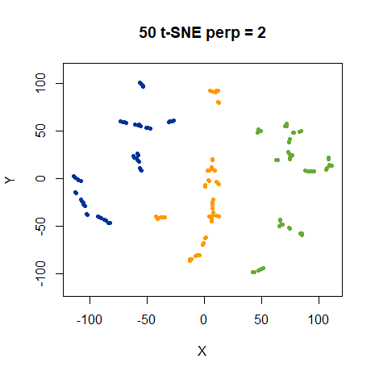 |
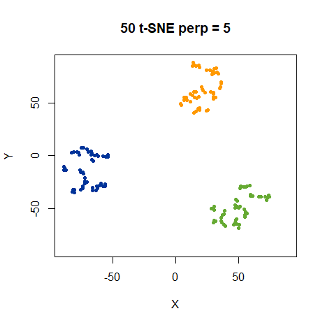 |
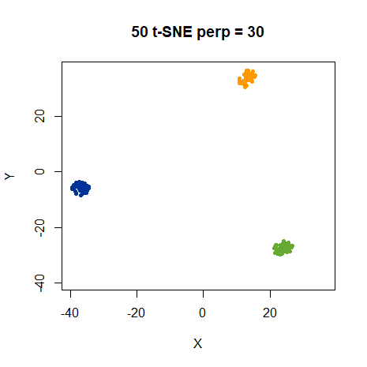 |
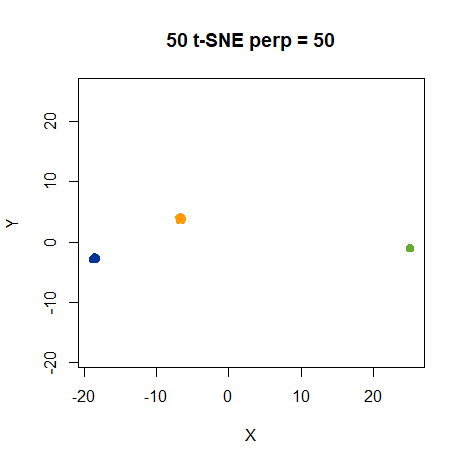 |
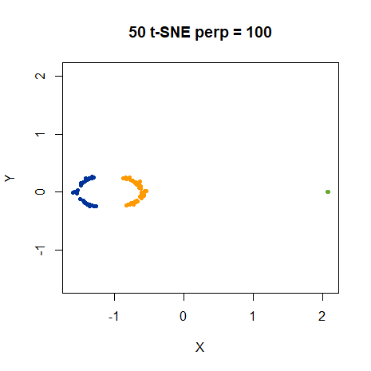 |
These results reproduce the distill results pretty well, which is a relief. At low perplexities, the relative distances of the clusters are not reproduced, which makes sense given that we are emphasizing local structure. At high perplexities, the clustering is more obvious, but the green cluster is shown as being smaller than the other two, which in turn take up odd cresent shapes at a perplexity of 100. All this is present in the distill results too.
Next, let’s look at the 200 points per cluster with the same perplexities.
200 points per cluster
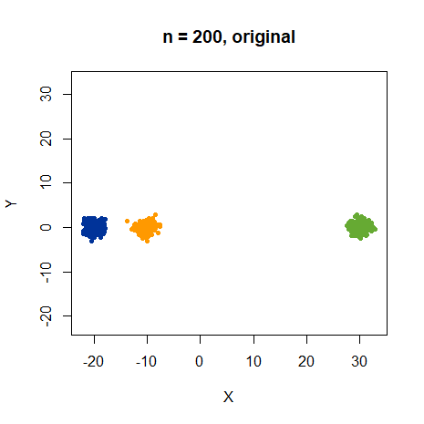 |
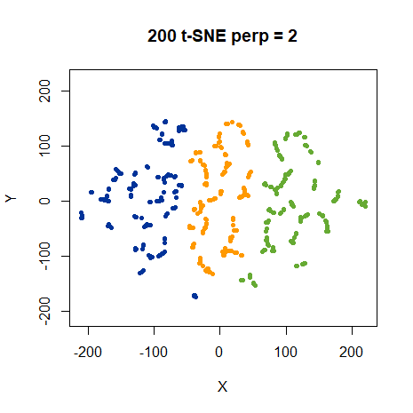 |
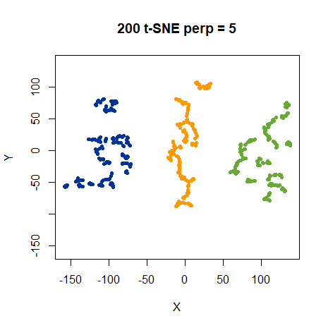 |
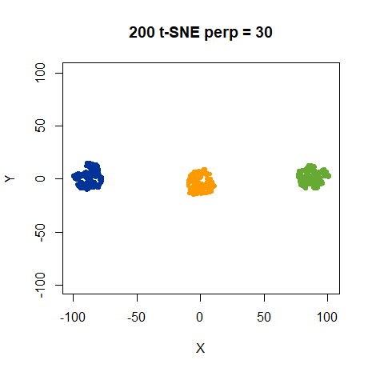 |
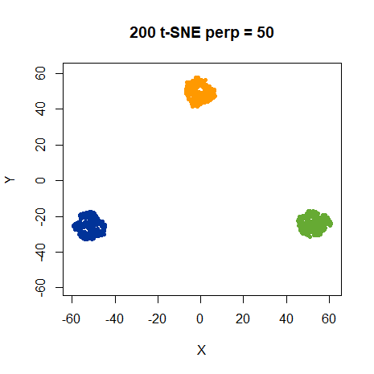 |
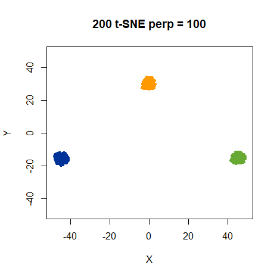 |
We do indeed get the same results.
Let’s also try and find a suitable perplexity for this dataset. To my mind the obvious thing to do is look at perplexities of 200 and 400, which, if you interpret perplexity as being akin to the number of nearest neighbors, should give equivalent results for this larger dataset as using a perplexity of 50 and 100, respectively with the smaller dataset.
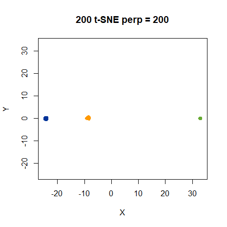 |
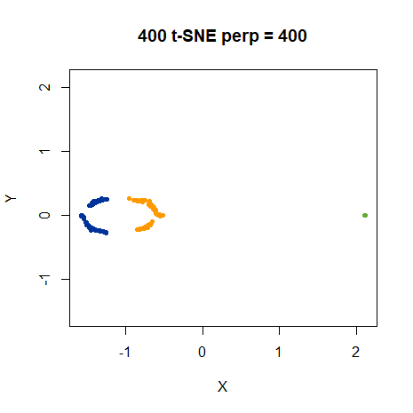 |
There we go. Increasing the perplexity beyond 100 in this case does allow for a “good” result to be obtained. For this dataset, setting the perplexity to the cluster size works. The point of this part of the distill article remains, however, which is “It’s bad news that seeing global geometry requires fine-tuning perplexity”.
As the results so far seem to be pretty much the same whether we use 50 or 200 points, we’ll stick with 50 points for faster optimization for the rest of the discussion.
What could be causing the distortions of the geometry at higher perplexity? I came up with two possibilities. First, given the dataset is only two dimensional, the distance-stretching used by the t-distribution in t-SNE is too strong for this dataset. Second, each Gaussian in the input kernel has its own bandwidth. But in the output space, we assume uniform “bandwidths” for the t-distributions.
ASNE and SSNE
For the first possibility, we can check wheter the t-distribution output kernel is responsible by swapping from t-SNE to SSNE or ASNE, which use Gaussians (with uniform bandwidths) in the output kernel.
First, let’s look at SSNE, which only differs from t-SNE in the output kernel definition.
|
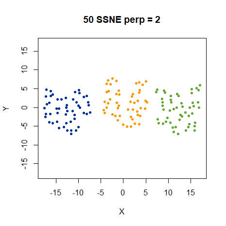 |
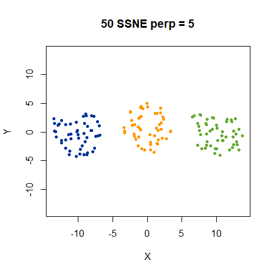 |
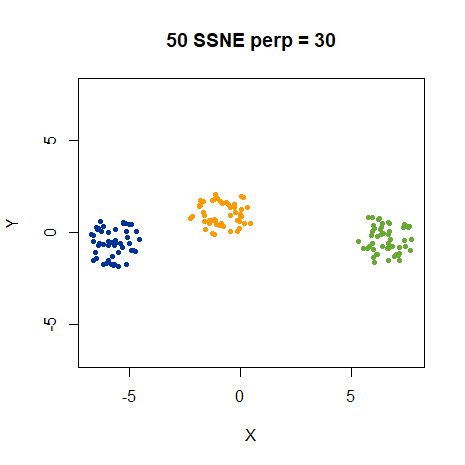 |
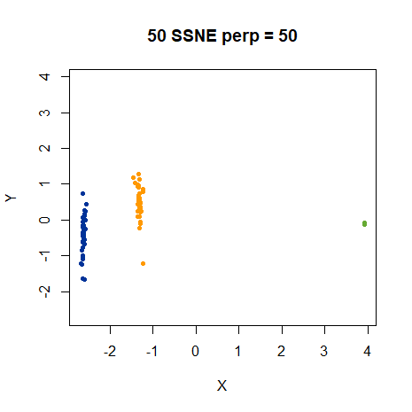 |
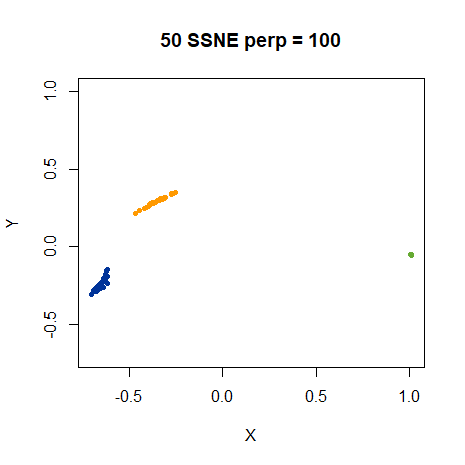 |
SSNE certainly reproduces the local structure better at low perplexities, although the clusters are a little irregularly shaped. The difference in relative distances between clusters is not present, but the overall globular shape of the clusters is much more obvious.
At perplexity 50, the apparent size difference between the green cluster and the other is still present, and in fact magnified. The blue and yellow clusters are now noticeably elongated, which wasn’t the case with t-SNE. This pattern is maintained at perplexity 100 with some minor changes.
SSNE and t-SNE both have a slightly more complicated normalization procedure than ASNE. While it doesn’t seem to have any major effect on real datasets, let’s see if the extra symmetrization and normalization step is responsible for any distortion, by running ASNE on this data:
|
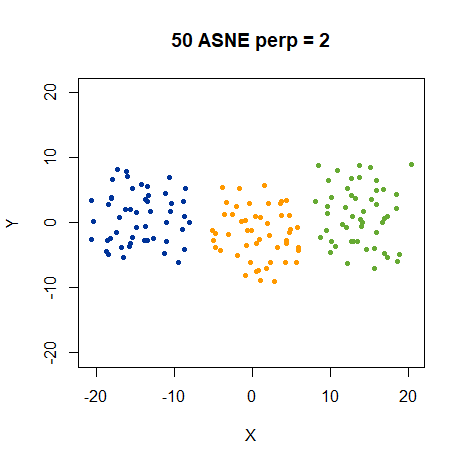 |
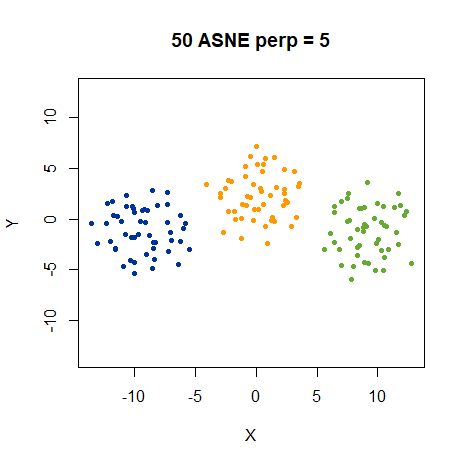 |
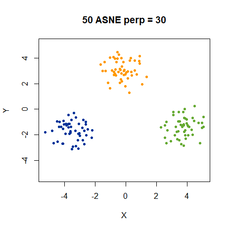 |
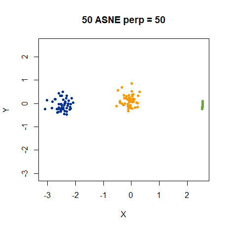 |
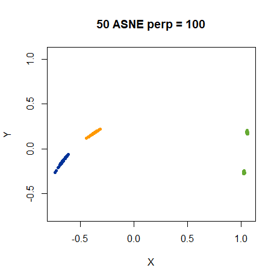 |
Low perplexity results seem less distorted than the SSNE, albeit marginally. However, the weirdness sets in at perplexity 50 again. At least the blue and yellow clusters are less distorted, although the green cluster still becomes tiny. At perplexity 100, the relative distances are more apparent. The yellow and blue cluster show the same elongation and relative orientation at SSNE, but seem slightly cleaner. Meanwhile, the green cluster has split into two!
So the t-distribution is certainly having an effect. At low perplexity, ASNE represents the data better. But the high perplexity results certainly aren’t an improvement.
To complete the confusion, here are the t-ASNE results (i.e. using the t-distribution in the output kernel but using ASNE normalization):
|
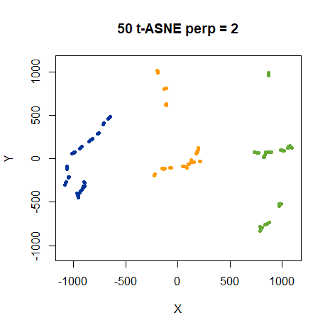 |
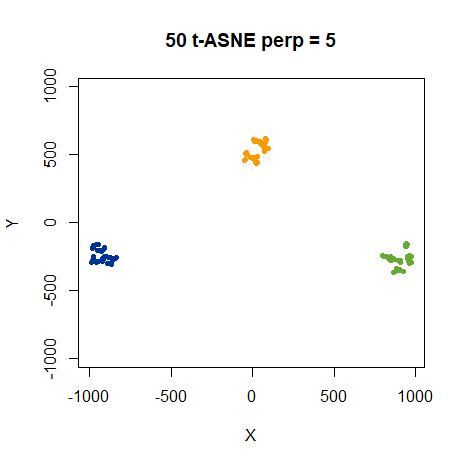 |
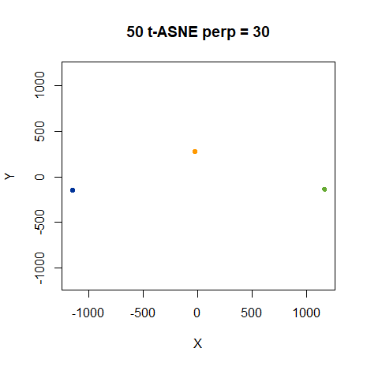 |
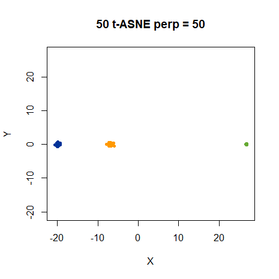 |
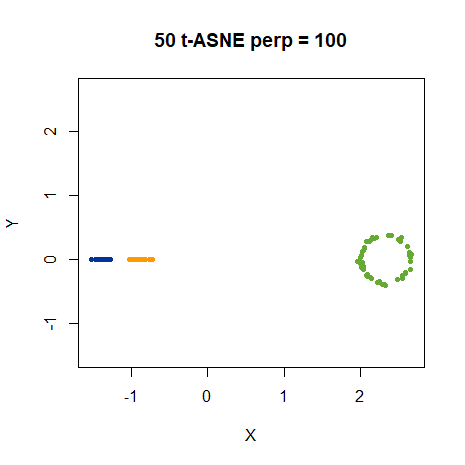 |
Up until perplexity 100, this was all going so expectedly, that I wouldn’t have included these results. The perplexity 100 results are quite suprising. I wouldn’t have predicted the green cluster suddenly becoming huge and circular from any of the previous results, that’s for sure.
Let’s agree that using gaussian functions improves the low perplexity results a bit, but doesn’t help us understand what’s going on at high perplexity. Exactly what’s going on there has not been clarified at all with these new results.
SNE with bandwidths
Onto the second avenue of our inquiries: would including bandwidths in the output kernel function help? This is a good idea in principle, because it’s widely recognized that the perplexity-based calibration is a vital part of getting good input weights: see, for example, the entropic affinities paper.
In practice, transferring the bandwidths to the output kernel in a way that makes sense is fraught with difficulty. Should we transfer the bandwidths as-is from the high-dimension to the low-dimension? Part of the reason we need to go to the trouble of t-SNE over simpler efforts like Sammon Mapping is because of the differences in ways low- and high-dimensional data is distributed. Things get even more muddy if we’re using a t-distribution in the output kernel. In this case, though, we’re in luck because the input and the output spaces have the same dimensionality, and therefore if we use ASNE with bandwidths we should be able to reproduce the input probability perfectly.
We’ll mark the SNE methods that use bandwidths in the output functions with a leading ‘B’, e.g. ASNE with bandwidths is “BASNE”. Using bandwidths in this way means that the output weight matrix is no longer symmetric. This doesn’t matter for ASNE and t-ASNE, but for SSNE and t-SNE, so we’ll look at them first.
It turns out ASNE with bandwidths is a pain to optimize with DBD at
low perplexity, requiring a very low learning rate
(eta = 1e-7). I double-checked these results with some
L-BFGS optimizations. Despite my misgivings about using L-BFGS with t-SNE on typical datasets, for
this fairly simple synthetic dataset it should work well. The DBD and
L-BFGS results are in decent agreement visually (given the very local
nature of the perplexity settings, there are plenty of equivalent
configurations).
threeclust_basne_lbfgs <- smallvis(
threec_50,
scale = FALSE,
perplexity = 2,
Y_init = "spca",
method = "basne",
opt = list("L-BFGS", ls_max_alpha = 1),
max_iter = 100000
)BASNE
|
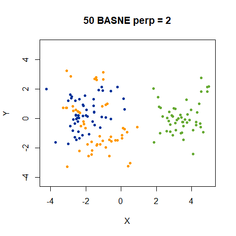 |
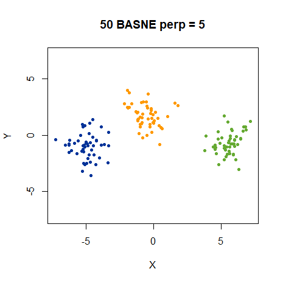 |
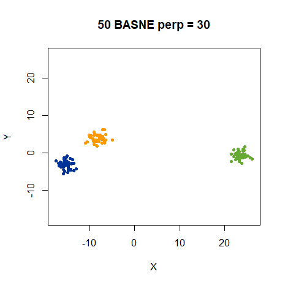 |
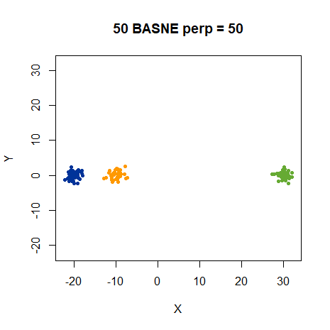 |
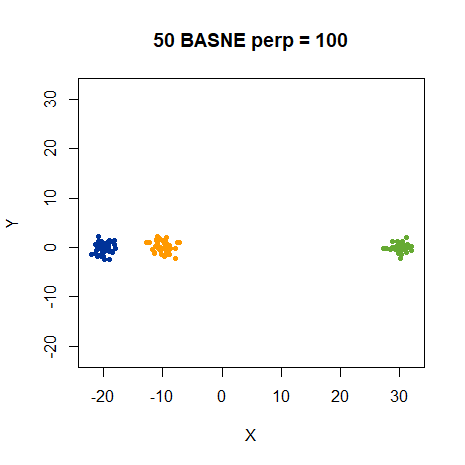 |
Amidst the sea of apparently identical results, here is the one combination that gives sensible results with a perplexity of 100. In fact, it gives the right result for pretty much any perplexity.
Bt-ASNE
|
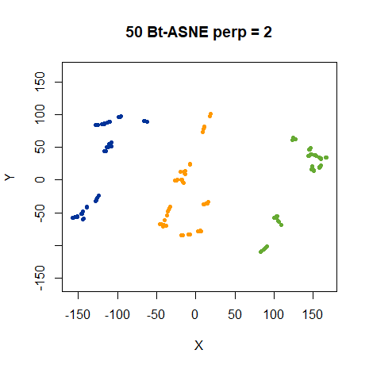 |
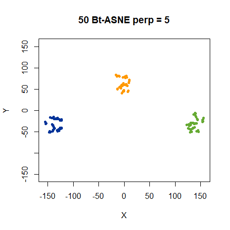 |
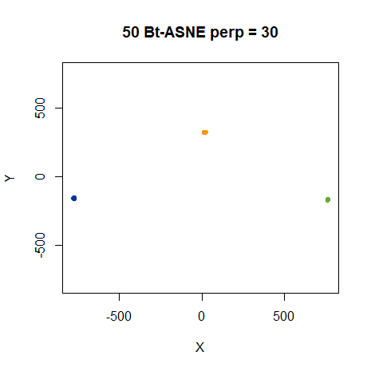 |
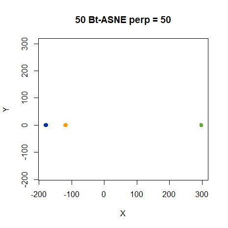 |
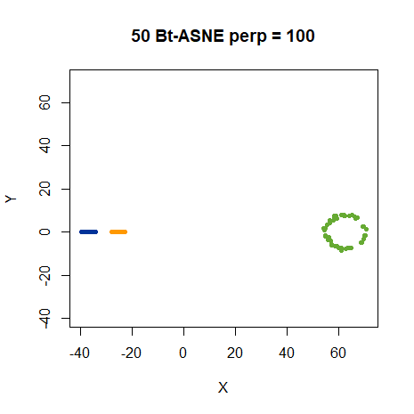 |
But no improvement to the t-ASNE results can be seen by using bandwidths.
Conceptually, adding bandwidths to t-SNE and SSNE is a bit messier than for ASNE. The resulting output probability matrix, Q, is no longer symmetric. This requires a slight change to the gradient calculation and means we’re trying to match a symmetrized input probability to an unsymmetrize output probability.
Also, because we don’t go through the same normalization procedure as we do in the input space, the connection between the calibrated bandwidths and the final probability we’re trying to reproduce is more tenuous. On the other hand, the process of creating symmetrized probability matrices is already different between the input and output probabilities in t-SNE and SSNE, and under the initialization conditions we look at here, the symmetrization procedure doesn’t seem to have much effect on results. So we might as well see what happens:
10D Gaussians
The default results on the distill page show results for 2D Gaussians. Most datasets are higher dimensional, so do the results hold up in that case? Results can be generated in situ on the distill page up to 50 dimensions and don’t seem very different. Using 10D Gaussians, the first 2 PCA components recovers 99% of the variance. This strongly suggests that the dataset is effectively two dimensional due to the inter-cluster distances between the green cluster and the other two. So we shouldn’t expect to see much difference between a 2D and 10D Gaussian result. And that’s just what we see for all the other methods as well as t-SNE, to the extent that there is no point even showing the results.
Most importantly, BASNE with 200 points per cluster with 10 dimensions, still gives the desired results even at a “high” perplexity of 400 or 500: the three clusters are of equal size, shapes are undistorted, and the relative distances are correctly reproduced. This happens even starting from random initializations, rather than the easier scaled PCA starting point.
Conclusions
What did we learn here? We can get good results on the three clusters dataset with a variety of perplexities if we choose the correct output distance kernel and take into account the bandwidths from the input space, and this generalizes to both the small and large dataset and to 2D and 10D Gaussians. If either the bandwidths aren’t accounted for or the kernel function doesn’t stretch the output space appropriately, you will see distortions for larger perplexities. Unfortunately, these results aren’t very generalizable to other datasets. If the input data isn’t two-dimensional, the bandwidths we obtain from the calibration will need modifying in some way. It’s not obvious how to go about doing that.
A different approach is to think about allowing the perplexity to change for different parts of the dataset, an idea that is also floated in the distill article, although without any suggestions as to how go about it. Even if that’s done, it’s not totally clear to me what problem you are solving here: is the problem that one perplexity doesn’t suit all clusters in a dataset or is it fundamentally about the wrong output function and bandwidth selection? As usual I leave you with questions and no answers.